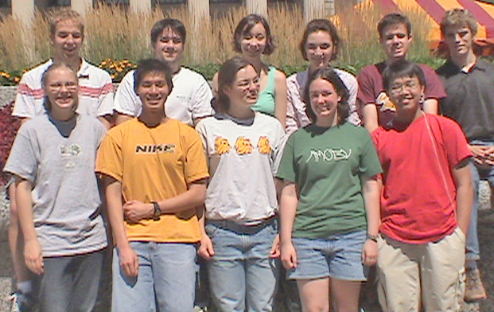

Twelve students participated in the REU program offered by the School of Physics and Astronomy during the summer of 2005, initiating them into research in a wide variety of topics, all at the forefront of physical science.
Laura Barrett (Middlebury College), working under the direction of Prof. Dahlberg, explored various issues relevant to the development of magnetic tunnel junctions, from manufacturing to testing. Such devices are a promising technology for high-density memory storage in future computers.
Melina Blees (Carleton College), worked with Prof. Huang in a continuing investigation of the properties of thin, freestanding liquid-crystal films, in particular measurements of the surface tension as a function of temperature and thickness. The aim of these studies is an improved understanding of the stability of smectic liquid-crystal films.
Anne Guzzi (College of William and Mary), working with Prof. Broadhurst in the field of biophysics, developed a computer program generating sound stimuli of specified shapes and patterns, some of which random, with the aim of testing theories relevant to the human brain’s response to, and capacity for storage of, auditory information.
Stephen Hansen (Creighton University), working with Prof. Cronin-Hennessy, contributed to the elaboration of a new method of background discrimination in the search for rare decays of the meson psi(3770) observed in the CLEO detector at the Cornell Electron Storage Ring (CESR), based on the recognition of strange particles in the final state.
Eric Hazlett (Colorado State University) collaborated with Dr. Leon Mualem, under the supervision of Prof. Heller, in the testing of the mechanical properties of wavelength-shifting optical fibers, crucial components of the proposed NOvA liquid-scintillator detector for the detailed study of neutrino flavor oscillations.
Hansford Hendargo (Harvey Mudd College) worked with Prof. Mueller in creating optical gratings for the production of “twisted”, so-called Laguerre-Gaussian laser beams from standard Gaussian ones, providing new tools for the imaging of microscopic processes involving biologically interesting macromolecules.
Alex Hooke (University of Maryland), working with Prof. Kakalios, studied the effects of the addition of silicon nanocrystals to hydrogenated amorphous silicon thin films, with the aim of improving their performance and reliability as components of photovoltaic cells.
Julie Jozwiak (Cornell College) worked with Prof. Cushman in further studies of backgrounds and issues of calibration for the CDMS II detector located deep underground within the Sudan mine in northern Minnesota, searching for signals of hypothetical weakly-interacting massive particles as components of the dark (non-baryonic) matter of the Universe.
Benedectus Juwono ( University of California San Diego) worked with Prof. Litchfield on another aspect of the R&D for the NOvA detector project, namely the optimization of the event selection program for the analysis of tracking data signalling neutrino interactions in the fiducial volume of the detector.
Ben Krueger (Drake University) worked with Prof. Goldman in the analysis of the electrical resistance of thin samples of metallic glasses at low-temperatures and in varying magnetic fields, providing evidence for novel quantum interference effects (localization and anti-localization) among conduction electrons in these materials.
Robert Mac Gregor (Rice University), working with Prof. Cattell, surveyed and analyzed the propagation of twelve solar Coronal Mass Ejection shocks, large bursts of plasma from the sun whose impact with the Earth’s magnetosphere can lead to geomagnetic storms with the potential of crippling space-borne communications and high-voltage power grids, and posing grave health risks to astronauts in orbit and to passengers in high-altitude aircraft.
Kate Raach (University of Minnesota), working with Prof. Crowell, investigated aspects of the static and dynamic behaviors of defects which appear in ferrofluids (colloidal suspensions of ferromagnetic particles in non-magnetic carrier fluids) when exposed to both static and alternating magnetic fields.